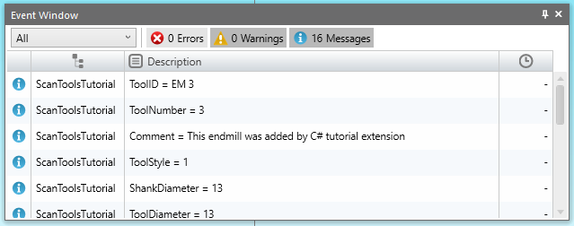

In this tutorial you will loop through all of the tools in the document and display certain information about them.
In the Tutorial: Create Tools we worked with a couple of specific tool technology objects, ToolMillEndMill and ToolMillDrill. There is only one Tools collection, however. We do not have a separate collection for just the end mills and a separate collection for just the drills.
The Tools collection is similar to the GraphicsCollection that we looked at in Tutorial: Scan the Graphics Collection. The GraphicsCollection contains GraphicObject objects. Those objects are generic objects that are themselves a more specific type of object such as an Arc, Circle, or Point.
So just like there is a generic GraphicObject that has just those properties common to all graphic objects, so too there is a generic Tool object that has just those properties common to all tool technologies. All tools, for example, have a ToolID, as well as a ToolNumber, and a Comment. They also have a ToolStyle property to specify exactly what type of tool technology that it is. If you need to see values that are only on specific tools, use the ToolStyle value which is provided by the espToolType enumeration. We can use this property to type cast our generic Tool objects as specific tool technologies.
Tutorial outputs information to the EventWindow :
